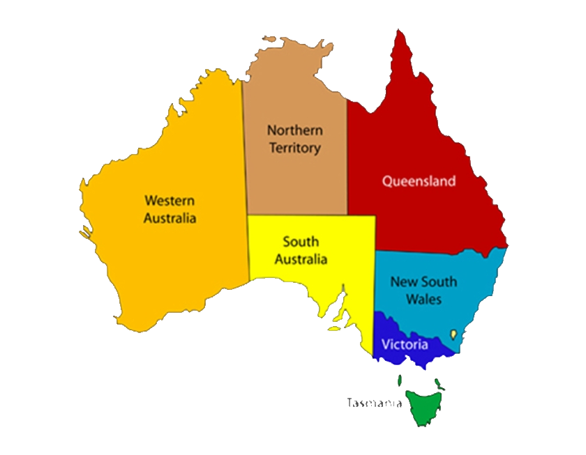

Our Countries
Australia
Australia is an island continent and the world’s sixth largest country (7,682,300 sq km). Lying between the Indian and Pacific oceans, the country is approximately 4,000 km from east to west and 3,200 km from north to south, with a coastline 36,735 km long.
Canberra is Australia’s capital city. With a population of approximately 380,000 people and situated in the Australian Capital Territory, Canberra is roughly half way between the two largest cities Melbourne and Sydney.
Australia has 19 listed World Heritage properties. Australia is also famous for its landmark buildings including the Sydney Harbour Bridge; its ancient geology, as well as for its high country. Australia’s first inhabitants, the Aboriginal people, are believed to have migrated from some unknown point in Asia to Australia between 50,000 and 60,000 years ago.
While Captain James Cook is credited with Australia’s European discovery in 1770, a Portuguese possibly first sighted the country, while the Dutch are known to have explored the coastal regions in the 1640s.
Australia is covered with 6 states and 2 Territories. Each States and Territories have there own Capital, please see below respectively:
- New South Wales – Sydney
- Victoria - Melbourne
- Queensland - Brisbane
- South Australia - Adelaide
- Western Australia - Perth
- Tasmania - Hobart
- Australian Capital Territory - Canberra
- Northern Territory - Darwin

Why Study in Australia?
Australia offers a diverse range of study options for international students, with more than 1,200 institutions and over 22,000 courses to choose from. There are 43 universities in Australia (40 Australian universities, two international universities, and one private specialty university). Along with our universities, many other institutions offer higher education courses. You can search for institutions and courses using the Institution and Course Search on this website.
Australian institutions offer a wide range of courses – from science to management and commerce, humanities to engineering, and law to health sciences. Australian institutions rank among the world’s best by discipline, particularly in engineering and technology, medicine, environmental science, and accounting and finance.
When it comes to world university rankings, Australia has a strong, proven track record. Across all global ranking systems, criteria and fields of study, Australia ranks highly for quality of education, student satisfaction, and global reputation.
In fact, eight of Australia’s universities feature in the top 100 ranked universities in the world in the latest QS ranking (2014-15). And if you have a specific study area of interest, there is every chance Australia has you covered, with at least three Australian universities in the top 50 worldwide across the study areas of Arts and Humanities, Engineering and Technologies, Natural Sciences, Life Sciences and Medicine and Social Sciences and Management.
High university rankings Australian has earned, but more importantly, it’s about what you will receive when you study in Australia – a world-class education and opportunities for an unlimited future.
Working While Studying
Working while you study in Australia can help complement your study and living experience. There are a number of reasons you might want to undertake part time work while studying in Australia, including assisting with living expenses and gaining work experience in your study area.
Most student visas allow you to work for up to 40 hours every two weeks while your course is in session, and unrestricted hours during any scheduled course break.
Opportunity After Study
After your graduation, you have several options available to you whether you stay in Australia or head home. You may be able to continue your studies in Australia to pursue a higher level qualification or another field of study, you may be eligible to undertake post study work to put your newly gained knowledge to use and gain work experience in Australia, or you may choose to go home to undertake further study or work there.
Your Australian qualification will make you an attractive employee, not just to employers at home, but those in Australia and around the world as well.
If you are considering staying in Australia and working after your current visa expires, you’ll need to get a new visa that lets you do this. There are a number of options, so work out what best fits your situation.
If you completed a Bachelor, Masters or Doctoral degree, you may be eligible for the Post-Study Work stream of the Temporary Graduate (subclass 485) visa.
After competition of Bachelor Degree and Master Degree the students are eligible to apply for 2 years Post Study Work and for Research Degree and PhD students are eligible of 3 years and 4 years of PSW respectively.
If you want to stay in Australia independently of employer sponsorship for a longer term or professional career, you can submit an Expression of Interest (EOI) through SkillSelect .
Wherever your post-graduation path leads, think about joining an alumni group from your institution. It will help you stay in touch with your classmates, and can provide you with great benefits and opportunities.
Our Countries
United Kingdom
United Kingdom the Destination of Great Britain and Northern Ireland, commonly known as the United Kingdom or UK or Britain, or even England. The United Kingdom consists of England, Wales, Scotland (which together make up Great Britain) and Northern Ireland. The capital city of the UK is London, which is also the capital of England. For Wales the capital is Cardiff, for Scotland it is Edinburgh, and for Northern Ireland it is Belfast. English is spoken throughout the UK, but there are other official languages too, such as Welsh, Scots and Gaelic.
Britain’s system of government has developed over many centuries. Kings once ruled with advice from a council of religious leaders and nobles. This council eventually expanded into the Parliament, which now passes all the country’s laws. Today, the monarch (which can be a king or queen) has no real power.
The United Kingdom has been a leading trading nation for more than 500 years. In the 19th century, British industry helped make the country the most powerful nation in the world. It is still one of the strongest economies on Earth. Much of the north and west of the U.K. is covered in high ground, knife-edged mountain ridges separated by deep valleys. This terrain was shaped in the last Ice Age, when thick glaciers covered the land.
In the south of England, the countryside is mostly rolling hills. In northwest England and the Scottish Highlands are dozens of lakes, called lochs. These were left behind when the Ice Age glaciers melted. They tend to be long and narrow, and some are very deep. Legends say that a giant monster called Nessie lives in Loch Ness in Scotland.

Why Study in UK?
UK education is all about giving you inspiration to develop your knowledge and skills, freedom to be creative, and support to help you achieve your best.
UK schools, colleges and universities offer you a world-class education – the chance to follow your passion for learning and gain qualifications that are respected by employers and academics worldwide.
On a UK course you’ll benefit from excellent teaching and facilities. In order to accept students, UK education centres must meet strict quality standards set by the UK government and education bodies.
With a strong reputation for research, innovation and creativity, UK universities and colleges attract some of the world’s leading academics and industry professionals. You will be encouraged to express your own ideas and think for yourself. UK degree courses develop your critical thinking, decision-making and creativity – skills that are valued by employers worldwide.
This attention to quality is reflected in the UK’s excellent results:
- Four of the top eight universities in the world are in the UK (World Rankings, QS).
- The UK ranks in the top five in the world for university-industry collaboration (World Economic Forum Global Competitiveness Report 2014-15).
- International undergraduate satisfaction in the UK is very high, at 91% overall. Meanwhile, 85% of international undergraduates would recommend or actively recommend their UK study experience, higher than any major English-speaking study destinations. (UK International Unit, December 2015).
- The UK is a world-leading research nation. Researchers in the UK gain more citations and usage per article, and write more articles individually, than anywhere else in the world (International Comparative Performance of the UK Research Base, BIS).
- The UK ranks second in the world for the quality of its scientific and research institutions (World Economic Forum Global Competitiveness Report 2014-15)
- 54% of the research conducted by UK universities and colleges is classed as ‘world-leading’ (Research Assessment Exercise).
- 93% of UK postgraduate students rated the quality of teaching positively (HE Academy Postgraduate Taught Experience).
- The UK has the lowest student drop-out rate in Europe (Analysis for University of Southampton and IZA).
UK universities and research institutions have produced 107 Nobel Prize winners (Nobel Media AB).
Working While Studying
You are allowed to work while studying if you study at a university. International students who study a full-time undergraduate or postgraduate degree course at a recognised university are allowed to work part-time during term term for up to 20 hours a week and full-time during the holidays.
There are thousands of part-time student jobs in London to help support your studies. Many universities have careers and work placement centres to help you find employment. You can also search online at:
- Careers Group London
- Employment 4 students
- StudentJob
TIP - A part-time job will earn you additional money and give you vital extra skills, such as teamwork – great for your CV.
Opportunity After study
Non-EU students who wish to remain in the UK after they have graduated must apply for a work visa from UK Visa and Immigration. There are several visas you can apply for as a London graduate:
Tier 1 (Graduate Entrepreneur) Visa: This visa option is open to all students who are developing a world-class business idea. You will need to be identified and sponsored by your university as having the potential to create your own business in the UK. This applies to all graduating students from any subject discipline.
Tier 2 (General) Visa: This is the primary visa to remain and work in the UK after your studies. It is open to recent graduates with a Bachelor’s, Master’s or PhD from a recognized UK university. Before you apply you must have an offer of a skilled job from a licensed employer and be paid a salary of at least £20,800. After five years of employment, Tier 2 visa holders can apply for indefinite leave to remain in the UK providing they meet the salary requirements (£35,000) and other relevant eligibility criteria.
Tier 5 Temporary Worker: This visa allows you to work in the UK for up to 12 or 24 months (depending on the scheme you’re applying for). International students in the UK can apply for the Tier 5 (Government Authorised Exchange) visa to undertake work experience and internships in the UK after their studies. You can apply to switch from your Tier 4 visa to this visa from within the UK.
Our Countries
Canada
Canada is situated in the northern half of North America, sharing its border with USA and covers 41% of the continent. However, due to the climatic conditions, around 4/5th of the entire Canadian population live in the urbanized area near the southern border. Canada has 10 Provinces and 3 territories and Toronto is the largest city in Canada. Canada has been continuously regarded by UN as the best country in the world to live and to study. The government system of Canada is Constitutional Monarchy. However, the prevailing British Monarch also serves as the Canadian Monarch and for Australia and New Zealand as well.
Why Study in Canada?
- Canada is rated extremely high in terms of quality life and education.
- Canada offers very diverse range of courses
- Canadian academic programs are comparatively more affordable
- International students can work while they study in Canada
- Canada offers wide range of opportunities to establish career after completing studies
Working While Studying
- Canadian Study Permits will automatically authorize the international students to work off-campus for up to 20 hours per week during the academic session.
- International Students can work full-time during the scheduled breaks without the need to apply for a separate work permit.
Opportunity After study
- Upon completion of their studies in Canada, students can apply for work permit under Post Graduation Work Permit Program (PGWPP).
- Students must have studied full time in Canada and completed a program of study that lasted at least eight months.
A work permit under PGWPP can be issued for up to three years.
Our Countries
United States
United States of America also referred to as the United States, the U.S., the USA, or America) is a federal constitutional republic comprising fifty states and a federal district. The country is situated mostly in central North America, where its forty-eight contiguous states and Washington, D.C., the capital district, lie between the Pacific and Atlantic Oceans, bordered by Canada to the north and Mexico to the south. The state of Alaska is in the northwest of the continent, with Canada to the east and Russia to the west across the Bering Strait. The state of Hawaii is an archipelago in the mid-Pacific. The country also possesses several territories in the Caribbean and Pacific.
Why Study in USA?
- Around 300 of the top 500 universities in the world are from USA.
- USA offers the widest range of options for students in terms of courses and tuition fees.
- USA is the most popular destination for all the international student from around the world.
- USA offers huge scholarship opportunities for international students.
- USA offers OPT for international students allowing them to work after completion of their academic degrees.
Working While Studying
- International students are allowed to work 20 Hours per week on campus while semester is running.
- During the semester breaks, the hourly restrictions do not apply.
- Students can apply for CPT with their institution which will allow them to work off campus but only in their field of study.
Opportunity After study
- After completing their studies, International students are provided with OPT (Optional Practical Training) which will allow them to Work full time off campus in their field of study for up to 12 months.
- Students with STEM (Science, Technology, Engineering & Math) degrees are have an option to extend their OPT for further 24 months.
Our Countries
New Zealand
New Zealand (or Aotearoa – land of the long white cloud), truly is one of the most picturesque and photogenic places on earth. A small island nation of just over 4.5 million people, New Zealand is made up of two major land masses (North Island and South Island) and a number of smaller islands including Stewart Island located in the southwestern Pacific Ocean. The two main islands are divided by a 22km stretch of water called the Cook Strait.
New Zealand is located approximately 1,500km east of Australia and about 1,000km from the Pacific Islands. Due to its relative remoteness and being water locked, New Zealand was one of the last countries to be found and settled.
The country is made up of some of the worlds most spectacular landscapes, from vast mountain ranges, steaming volcanoes to sweeping coastlines. It is a natural playground for thrill seekers and adventurers and those who simply want to visit for the culture and landscapes.
New Zealander’s are affectionately known as “Kiwis”. The name derives from the kiwi, a flightless bird native to New Zealand. It is also the national symbol. Kiwi’s are characterised as rugged, industrious problem solvers and people who innovate. Kiwi’s are great travellers themselves with many exploring and making an impact on the world (sport, business, politics, etc). Younger New Zealander’s often travel to England for working holidays before settling back in New Zealand and any New Zealander can travel and work in Australia indefinitely.

Why Study in New Zealand?
New Zealand, although it is the same size as Japan or Great Britain, but there are a lot of reasons that you should consider going there for your studies abroad.
New Zealand has 8 state-funded universities, 16 Institutes of Technology and Polytechnics (ITPs) and about 550 Private Training Establishments (PTEs), which include English language schools.Choose the type of institution that’s best for your career path:
- Universities offer higher degree-level education. Programmes are research-led and generally academic rather than vocational.
- In the 2015/16 QS World University Rankings, all eight of New Zealand’s universities were in the top 100 in at least one subject.
- ITPs and a few larger PTEs offer vocational degree-level education.
PTEs tend to offer specific vocational programmes, mainly at certificate and diploma level.
New Zealand has signed agreements with groups of European and Asia-Pacific countries that commit to recognising each other’s qualifications.
These agreements include the Lisbon Recognition Convention in Europe, which has been signed by 50 countries and international organisations including the European Union, the United States, Australia, Canada, Russia and Israel.
Working While Studying
If you have a Student Visa, you may be able to work part-time, up to 20 hours per week, and full-time during scheduled holidays.
Students of a Masters by research or Doctoral Degree at a New Zealand institution may work full-time while they are studying.
During scheduled breaks eligible students may work full-time.
You may be eligible to work full-time during all scheduled breaks if your programme is for one academic year, AND is worth 120 credits or more.
If your programme is full-time for one academic year but worth less than 120 credits, you may be able to work full-time during the Christmas and New Year holiday break.
Opportunity After Study
Once you’ve finished your study, you may want to stay on and work in New Zealand for a while to gain work experience. You may even consider staying in New Zealand permanently.
There are pathways that make it easier for you to stay, if you meet certain conditions.
New Zealand’s immigration policies include a post-study work pathway for international students who have completed a New Zealand qualification. This lets you find a job and get work experience in a field directly related to your studies, and makes it easier to apply for residence.
There are two types of work visa specifically for students who have completed their tertiary study in New Zealand:
The Post-study work visa (open). This gives you up to 12 months to find a job that is relevant to your studies.
The Post-study work visa (employer assisted). This option lets you work in a specific job, which must be relevant to your studies, for two more years.
If you want to stay in New Zealand for longer you’ll need to find a job that is relevant to the qualification you achieved here.
If you decide you’re going to look for work here Seek, TradeMe and New Kiwis are popular job search sites. You should also check out the Careers New Zealand website which has a list of online recruitment sites.